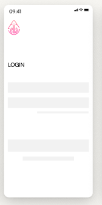

“Empowering Women to Navigate Menstrual Health in a New Country"
BACKGROUND
"As an international student in Canada, I encountered unexpected hormonal imbalances and menstrual
health challenges that I had never experienced in my home country. Through research, I discovered
that
I wasn’t alone—many women face similar struggles when relocating to a new environment. This
realization
inspired me to create The Ella App, a platform designed to support women in managing their menstrual
health during
such transitions. By offering personalized insights, tracking tools, and resources, The Ella App
empowers women to
navigate the unique challenges of relocation with confidence and care."
USER RESEARCH
PROBLEM STATEMENT
An international female student needs to deal about her menstrual cycle issues
because relocating to new country results in cycle irregularities, as well as variations in
menstrual and psychological symptoms that may arise due to the transition.
PROTO PERSONA
Fang Jing
Webdesigner and MBA student
37 years old
From: South Korea
Lives: Waterloo, ON Canada
ABOUT FANG
- Single
- Living alone
- Socially Reserved but friendly
- She values independence and has a strong sense of resilience when facing challenges
- She have a strong eye for detail, creativity, and a passion for design and technology
- Love to explore new places, foods, and cultural events, enriching her experience and understanding of the world
PAINS
- Changes in my period since moving to Canada.
- Food culture impacted my menstrual cycles
- Hard to find any information of menstrual and hormonal health
- Adjusting to the new healthcare system is challenging
- Fell invasive and uncomfortable in discussing menstrual health
NEEDS
- I need to know which food to be taken on different times of my menstrual cycle
- I want health information on menstrual cycles
- Must find a provider I trust
- Symptom tracking with personalized insights
- Easy access to local healthcare resources.
- Articles healthcare information
Fang Jing
Graphic Design student
29 years old
From: Bangalor, India
Location: Oakvile, ON, Canadá
ABOUT AISHA
- Live with family
- Married
- From rural place
- Dedicated to her studies and work.
- Enjoys cooking, particularly with fresh ingredients.
- Very responsible in managing her own activities and those of others.
- Loves sharing experiences from her culture and is curious about other cultures.
- Enjoys making friends but feels frustrated when others do not fulfill their responsibilities and it affects her negatively.
PAINS
- Irregular periods with hormonal changes. .
- I gained weight because of irregularity.
- Stress, environment and diet is completely changed when i moved to new place./li>
NEEDS
- NEED balance in my life.

App Visual Design
The app is named Ella, symbolizing empowerment, adaptability, and care—qualities
that resonate with women navigating the challenges of relocation. The logo was
thoughtfully designed to reflect these themes, creating a welcoming and supportive identity for the
app.
WIREFRAME


The wireframe for Ella serves as a foundational blueprint, outlining the app’s structure, navigation
flow, and key features. Designed with the unique needs of women who have recently relocated, the
wireframe
emphasizes simplicity and user-friendliness. Each element is strategically placed to guide users through
tracking their
menstrual health, managing symptoms, and accessing educational resources with ease. By prioritizing
accessibility and
intuitive design, the wireframe ensures that Ella provides a seamless and supportive experience,
empowering
women to adapt
confidently to their new environments.
PROTOTYPE
The high-fidelity prototype for Ella brings the app’s design to life with polished visuals, realistic
interactions, and detailed functionality. Built to closely resemble the final product, the prototype
incorporates
vibrant color schemes, clear typography, and intuitive iconography tailored to create a welcoming and
empowering
experience for women. Each screen is thoughtfully designed to facilitate menstrual tracking, symptom
management, and access
to resources, ensuring the app meets the unique needs of women adapting to life in a new environment.
This
prototype serves
as a crucial step in refining the user experience, gathering feedback, and demonstrating the app's
potential
impact.
CONCLUSION
The design process focused on collaboration, creativity, and user-centered principles, resulting in
an app concept tailored to support international female students' hormonal health needs.
The app offers culturally sensitive support, personalized insights, and strong privacy protections,
aiming to empower users and build community connections.